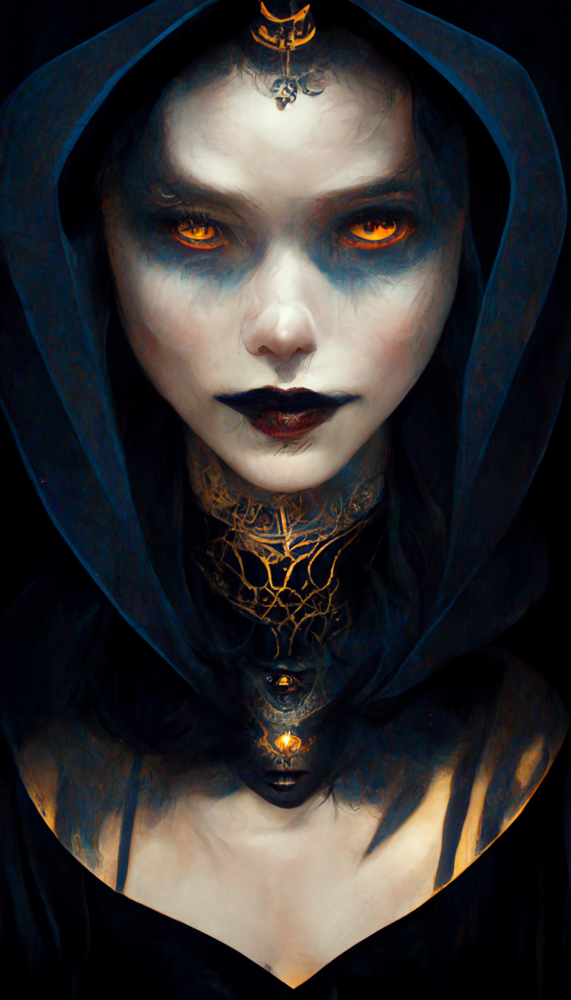

Nightshade
NightShade is a fierce warrior, known for her agility and stealth. She is a skilled fighter who prefers to strike from the shadows, using her knowledge of the terrain to outmaneuver her enemies. Her reputation precedes her, and many fear the mere mention of her name. Despite her formidable skills, NightShade is a solitary figure, keeping her own counsel and never revealing her true motives.

Warcry
Warcry is a fearsome knight who has risen from the dead to continue his quest for vengeance. He is a relentless fighter, driven by a single-minded determination to seek retribution against those who wronged him in life. Despite his undead status, Warcry possesses a supernatural agility and strength, making him a formidable opponent in battle. He is often seen leading his undead army into battle, his distinctive battle cry striking fear into the hearts of his enemies.
Grimshadow
GrimShadow is a powerful and solitary dark witch, feared for her formidable magic. She lives deep in the forest and rarely uses her powers for personal gain. Those who seek her out must be cautious, for she is known to be unpredictable and dangerous to cross. GrimShadow is a shadowy figure, cloaked in darkness and mystery, and her true intentions are known only to herself.
Shadowstrike
Shadowstrike is a deadly assassin with a reputation for being both swift and stylish. He is known for his impeccable manners and gentlemanly demeanor, which contrast with his deadly profession. Shadowstrike is a master of disguise and can blend into any crowd, making him difficult to detect. He is a precise and efficient killer, using his lightning-fast reflexes and sharp intellect to outmaneuver his targets. Despite his profession, Shadowstrike operates with a strict moral code, never accepting a contract that would harm innocent people

Deathwhisper
Deathwhisper is a mysterious and formidable soldier, with a reputation that spans across time and space. Little is known about his origins or his true identity, but he is rumored to have fought in some of the most significant battles in history, from ancient times to the modern era. Despite the passage of time, Deathwhisper remains a fierce warrior, with unparalleled skill and an unwavering determination to see his mission through to the end

Bloodrage
Bloodrage is a deadly fighter with a deceivingly cute exterior. She may appear innocent and sweet, but her petite frame belies her immense strength and ferocity in battle. Bloodrage is a master of close combat, using her agility and sharp reflexes to outmaneuver her opponents. She is also known for her cunning and resourcefulness, often devising creative strategies to take down her enemies. Despite her fearsome reputation, Bloodrage has a soft spot for animals and often goes out of her way to help them. She is a complex and intriguing figure, with a mix of adorable charm and deadly ferocity.

Shadowclaw
Shadowclaw is a formidable creature, a hybrid of man and tiger with razor-sharp claws and unmatched agility. He is a solitary figure, preferring to keep to himself and avoid unnecessary conflict. Shadowclaw is a skilled hunter, using his keen senses and stealth to stalk his prey. He is a fierce protector of his territory, and those who threaten it do so at their own risk. Despite his ferocity, Shadowclaw has a deep respect for the natural world and strives to live in harmony with it. He is a creature of mystery and power, with an unwavering spirit and an unmatched skillset.

Darkfire
Darkfire is a blood magician of immense power and darkness. She wields a formidable command over the forces of blood and shadows, using them to bend others to her will. Darkfire is a solitary figure, shrouded in mystery and rarely revealing her true intentions. She is feared by many for her dark powers, which can bring even the bravest warriors to their knees. Despite her fearsome reputation, Darkfire has a deep sense of loyalty to those she considers her own. She will stop at nothing to protect them, using her formidable powers to strike down any who would seek to harm them.